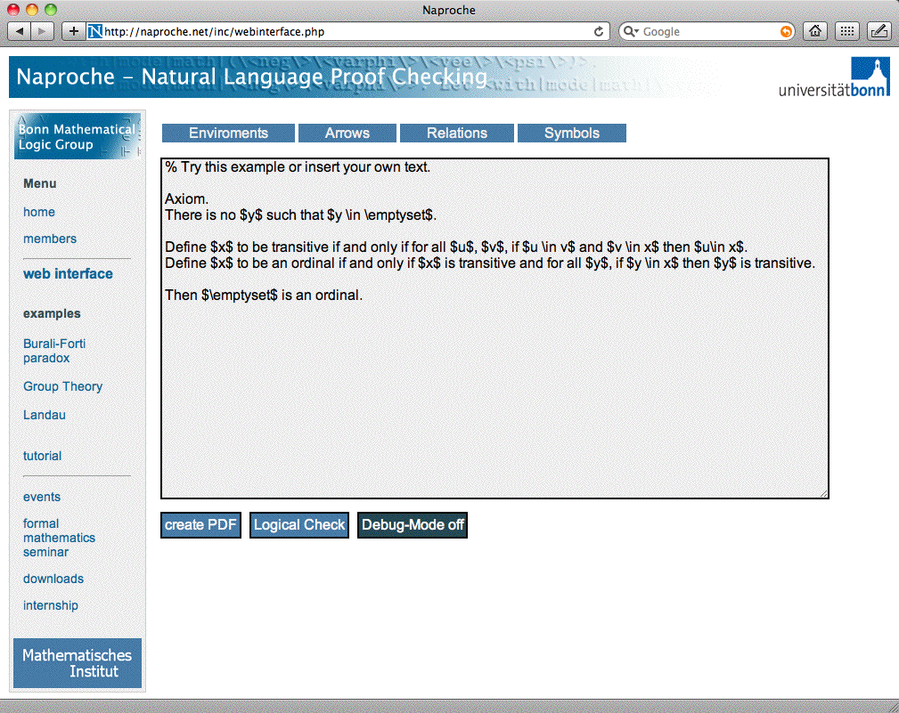

Natural Language Proof Checking in Bonn

About Naproche
- A linguistic, philosophical, mathematical perspective
- Controlled natural language for mathematics
- Proof checking of mathematical texts
- Web interface
Application of ATP
- Mathematical texts translated to Naproche CNL
- Proof obligation for each statement
- Axiom selection based on explicit references, textual proximity,
logical proximity
- Obligations discharged by
RemoteSoT
- IDV used for debugging
- Problems added to the
TPTP problem library
Play with Naproche online